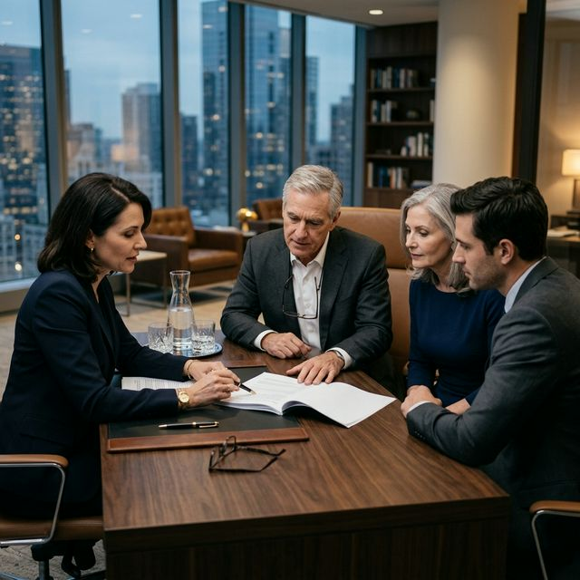

Abogados Especialistas en Sucesiones y Herencias en CABA y GBA
Lo guiamos con sensibilidad, claridad y profesionalismo para proteger el patrimonio de su familia en los momentos más difíciles. Resolvemos sus trámites sin demoras innecesarias.

¿Por qué necesita iniciar una sucesión?
Tras el fallecimiento de un familiar, la tramitación legal resulta indispensable para ordenar la transmisión patrimonial. El proceso judicial de sucesión es la vía reglamentaria necesaria para concretar transferencias de títulos de propiedad (inmuebles o rodados), disposición de depósitos bancarios y resolución de pasivos.
La correcta gestión técnica del sucesorio previene posibles conflictos entre coherederos y brinda seguridad jurídica a las transacciones. Nuestro equipo asume la carga administrativa y procesal aportando celeridad y previsibilidad legal.
Nuestros servicios en derecho sucesorio
- Sucesiones con Testamento (Testamentarias): Nos encargamos de validar la voluntad del causante ante el juez y asegurar que la distribución de los bienes se realice exactamente como fue planificada.
- Sucesiones sin Testamento (Ab intestato): Si su familiar no dejó un testamento, lo guiamos en el proceso legal para identificar a los herederos legítimos según la ley y proteger sus derechos.
- Gestión de Deudas e Impuestos: Te asesoramos sobre cómo las deudas de la herencia deben ser liquidadas utilizando los bienes del patrimonio, evitando que heredes problemas financieros.
- Afectación al Régimen de Protección de la Vivienda: Asesoramos e implementamos los instrumentos legales idóneos para resguardar el inmueble de la familia frente a eventuales contingencias patrimoniales de terceros.
¿Por qué elegirnos?
Atención Personalizada y Transparencia Procesal: Cada expediente se asigna y es gestionado por un profesional especialista titular. Promovemos una comunicación clara, brindando reportes de avance precisos y acceso abierto a las instancias de su expediente.
Preguntas Frecuentes (FAQ)
Inicialmente, la documentación básica requerida incluye:
- Certificado de defunción.
- DNI de los herederos.
- Partidas de nacimiento o matrimonio que acrediten el vínculo.
- Documentación de los bienes (título de propiedad, cédula verde, etc.).
- Testamento (en caso de que exista).
Gestión Ágil: Puede iniciar su trámite hoy mismo enviándonos esta documentación de manera digitalizada (vía Email o WhatsApp). Focalizamos en un proceso rápido para que su expediente esté en marcha lo antes posible. Si le falta algún documento, nosotros le ayudamos a gestionarlo.
Dé el primer paso para asegurar la tranquilidad de su familia.
Sabemos que cada caso es único. Contáctenos hoy para realizar un análisis de su situación y ofrecerle un presupuesto claro y a medida.
Agendar mi asesoría